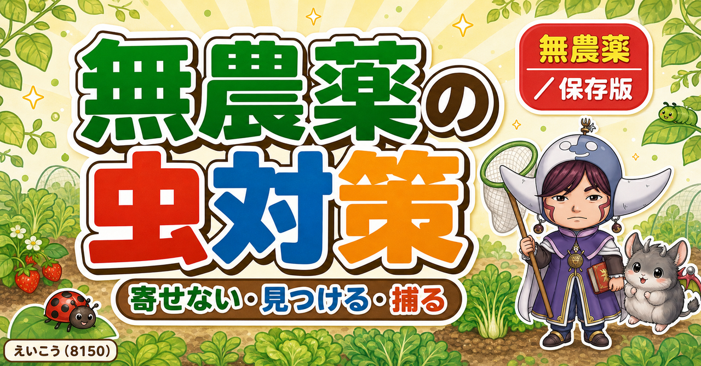
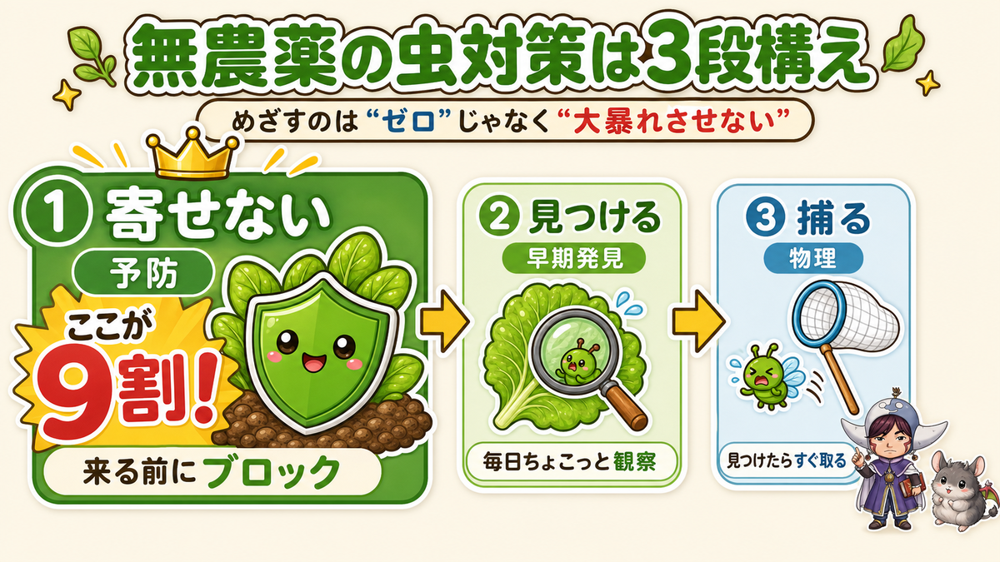
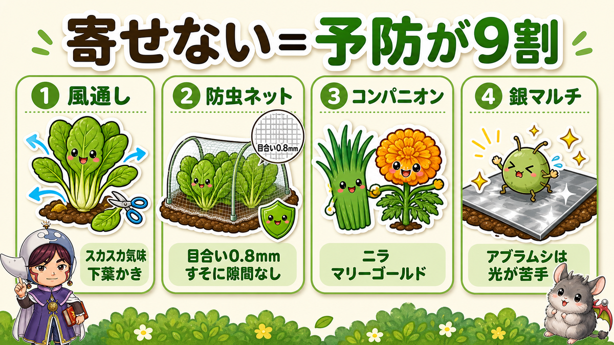
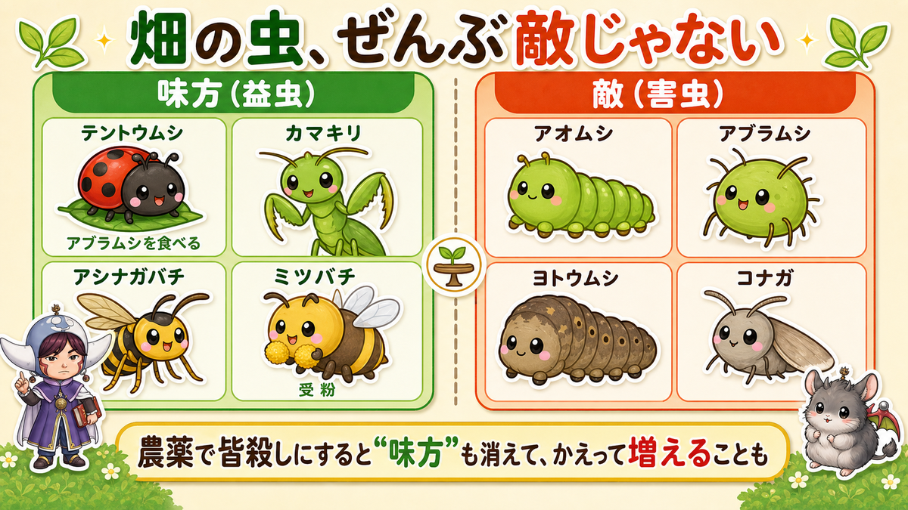

【保存版】無農薬の虫対策大全🐛「寄せない・見つける・捕る」の3段構え

🗨️「葉っぱが穴だらけ…気づいたらレースみたいになってる」
🗨️「無農薬でやりたいけど、虫、正直どうすれば？」
🗨️「見るのがしんどくて、心が折れそう」
どうも、8150（えいこう）です🌱 家庭菜園歴8年、理科の教員免許を持ってて、有機・無農薬で野菜を育ててます。…って自己紹介、かたくなってきたのでこの辺で(笑)
今日は、無農薬でいちばん多い悩み「虫」の話。最初に、いちばん大事なことを正直に言いますね。
無農薬で「虫ゼロ」は、ムリです。
いきなり夢のない話ですみません(笑) でも大丈夫。目指すのは“ゼロ”じゃなくて、「大暴れさせない」。ここを勘違いすると、いつまでも「まだ虫おる…」って苦しくなっちゃうんですよね。ちょっと虫がいるくらいの畑が、じつは健康な証拠やったりします。安心して読み進めてください☺️
考え方：虫対策は「寄せない・見つける・捕る」の3段構え
やることを、最初に交通整理しておきます。無農薬の虫対策って、この3つだけなんです。

- ① 寄せない（予防）…そもそも来させない・つきにくくする。ここが9割。
- ② 見つける（早期発見）…来ちゃったやつを、小さいうちに気づく。
- ③ 捕る（物理でやっつける）…見つけたら、手や道具でサクッと。
農薬を使わないぶん、①の予防をどれだけやれるかで、あとがぜんぜん変わります。「捕る」ばっかり頑張ると、いたちごっこで心が折れます。私も1年目、毎朝アオムシと格闘して「もう無理…」ってなりました😇 順番、大事です。
①寄せない：予防が9割
いちばん力を入れてほしいのがここ。地味なんですけど、ほんまに効きます。

風通しをよくする
虫は「ジメッと茂ったところ」が大好き。密植しない・下葉をかく・混みすぎた枝を整理する。これだけで湿気と虫の住みかが減ります。無農薬は“スカスカ気味”がちょうどいい。
防虫ネットで物理的にブロック
いちばん確実。とくにアブラナ科（キャベツ・白菜・大根・ブロッコリー）は必須です。ポイントは、目合い0.8mm以下を選ぶこと（コナガみたいな小さいやつは1mmだと入ってきます）。そしてすそに隙間を作らない。ここが甘いと、中で虫が「貸切ディナー」してます(笑)
- 落とし穴その1：葉をネットに触れさせない…葉がぴたっと触れていると、外から卵を産みつけられて、網目から生まれたての幼虫が入ってきます。低いトンネルだと葉がくっつきがち。少し大きめのアーチ支柱で、ネットと葉のあいだに空間をつくってください。
- 落とし穴その2：かけるのが遅いと逆効果…もう虫がいる状態でかぶせると、天敵も入れない“虫の楽園”を作ってしまいます。私もこれで一度やらかしました😇 かけるなら植え付けと同時に、が鉄則です。
ネットは「大きめのアーチで葉に触れさせない」「すそをしっかり留める」の2つが命。支柱とパッカーはケチらないほうがいいです。


![[商品価格に関しましては、リンクが作成された時点と現時点で情報が変更されている場合がございます。]](https://hbb.afl.rakuten.co.jp/hgb/55e77bb2.a973bab2.55e77bb3.28befe28/?me_id=1223148&item_id=10001699&pc=https%3A%2F%2Fthumbnail.image.rakuten.co.jp%2F%400_mall%2Fideshokai%2Fcabinet%2Fam425.jpg%3F_ex%3D240x240&s=240x240&t=picttext "[商品価格に関しましては、リンクが作成された時点と現時点で情報が変更されている場合がございます。]")
※防虫ネット本体は、この記事で書いたとおり目合い0.8mm以下のものを選んでください。よく売っている1mm目だと、コナガのような小さい虫が入ってきます。
コンパニオンプランツ（一緒に植える）
ニラ・ネギを野菜の根元に、通路にマリーゴールドやバジル。おまじない程度…と思いきや、これが地味に効くんですよね。
混植は「科をまぜる」のがコツ。虫は食べる野菜がだいたい決まっています。大根のとなりに春菊、アブラナ科のうねの真ん中にレタス（キク科）。好きな匂いと嫌いな匂いが混ざると「なんか変な匂いもするな…別のとこ行くか」となって、寄られにくくなります。白菜とレタスを混ぜて植えた年は、食害が1割ほどで済みました。ただし過信は禁物、減るだけでゼロにはなりません。虫も生きるのに必死ですから「多少くさくても行くわ」というツワモノがいます(笑)
銀色でアブラムシをまどわす
アブラムシはキラキラ光るのが苦手。シルバーマルチや、支柱に銀テープを少し垂らすだけでも寄りにくくなります。
持ち込まない・肥料をやりすぎない
- 持ち込まない…苗を買うとき、葉の裏をチェック。卵やアブラムシがついた苗を家に連れて帰ったら、そこから畑デビューされちゃいます。
- 肥料をやりすぎない…これ、意外な盲点です。チッソが多すぎると葉に“えぐみ”が出て、それが虫にとってはごちそうになると言われます。大きくしようと肥料を盛るほど、虫を呼んでしまう。ほどほどが結局いちばん強いんですよね。
全部やらなくていいです。まずは「風通し」と「アブラナ科にはネット」。この2つだけで体感かなり減りますよ。
②見つける・③捕る：早期発見して、小さいうちに
予防しても、ゼロにはならない（さっき言ったやつです）。だから早く見つけて、小さいうちに捕る。ここはスピード勝負です。
どれくらい見るか。目安は1日10分、朝にざっと。これで十分です。ただし無農薬なら、2〜3日の放置はアウト。3日空けるとほんまに食べられます。逆に言えば、毎日10分の習慣さえあれば勝てるということ。
見つけるコツ
- 朝いちばんに畑を見る…ヨトウムシやナメクジは夜に暴れて昼は隠れるタイプ。被害だけ増えて犯人が見つからない時は、夕方〜夜に懐中電灯で見回ると、むしゃむしゃやってる現行犯を捕まえられます。
- 葉の裏を見る…卵もアブラムシも、たいてい裏側。表だけ見て「大丈夫そう」は危険です。
- フンを探す…葉の上に黒いツブツブ（フン）があったら、真上か近くに必ずいます。名探偵になった気分で🔍
- 葉の表面が白っぽく、カスリみたいになっていたら要注意…その裏で、生まれたてのヨトウムシが集団でごはん中です。そっとめくると小さいのがびっしり。この段階で葉ごと処分すれば、被害はそこで止まります。
- 葉が網目状になっていたらヨトウ…かたい葉脈を残して、やわらかい所だけ食べるからです。レースみたいになってきたら、かなり育った個体がいます。
- 穴はあるのに犯人がいない＝昼間は土の中…ヨトウやネキリムシは夜行性で、昼は株元の土にもぐって寝ています。株のまわりの土を指で軽くほぐしてみてください。ゴロッと出てきます。しかも1匹じゃない。だいたい3〜4匹、多いと5〜6匹まとまって出てくるので、被害株の周りは念入りに。
- 株が根元から切り倒されていたらネキリムシ…倒れた葉をどけると、その下でのんびりしていることが多いです。私も一度、犯人が見つからず「幽霊か？」と思ったら、倒れた葉の下でぐっすり寝てました😇
捕るコツ
- アオムシ・イモムシ…見つけたら手か割り箸でポイ。苦手な人は割り箸＋バケツで。
- アブラムシ…数が少なければガムテープでペタッ、増えてたら手袋でこすり落とすか水で洗い流す。テントウムシがいたら、そっとしておいてあげてください（後で理由を話します）。
- コナガ・ヨトウ…卵のうち（葉裏の黄色いツブツブ）に葉ごと処分するのがいちばんラク。大きくなると薬も効きにくいんです。
- ウリハムシには「バケツ1個」…これ、お金ゼロでできる裏ワザです。黄色〜オレンジ色のバケツに水を張って、畑にポンと置いておくだけ。ウリハムシはこの色に吸い寄せられて飛び込み、一度水に落ちると這い上がれません。洗剤も要らない、水だけでOK。ついでにアザミウマみたいな小さい虫も入ります。もちろん100%ではないので、あくまで“助っ人”として。
- 逆に、黄色い粘着シートはおすすめしません…ウリハムシはほとんど捕れないのに、テントウムシなどの味方がベタッと捕まってしまいます。無農薬でいくなら、これは避けたいところ。
- 小さいうちに手を打つ…虫は大きくなるほど、どんな手も効きにくくなります。「まだ小さいから様子見」より「小さいから今すぐ」。結果的に手間が減ります。
いちばんダメなのは、見て見ぬふり。「まあ明日でええか」の一晩で、アブラムシは倍に増えます。ほんま早い。逆に、毎朝ちょっと見る習慣さえつけば、無農薬はぐっとラクになります。
虫が苦手な人ほど、道具に頼るのが続けるコツです。素手でいかなくていいんですよ。

お酢スプレー・木酢液の“ほんとうの立ち位置”
ここ、無農薬でいちばん誤解されているところなので、はっきり書きますね。
お酢のスプレーに、虫を殺す力はありません。パッケージをよく見ると「予防スプレー」と書いてあります。虫がいるところにかけても、死にません。私も昔、かければ倒せると思ってシュシュッとやって、まったく効かず「あれ？」となりました😇
正しい使い方は、虫がいない状態でまいて“来にくくする”こと。虫がついてしまったら、まず水でジャーッと洗い流して、いない状態にしてからかけます。順番が逆だと意味がないんです。タイミングは週1〜2回、そして雨の翌日。雨で流れてしまうので、降ったら仕切り直し。
じつはお酢は「特定農薬（特定防除資材）」という扱いで、制度上は“農薬の一種”です。ざっくり言うと「原材料から見て、人にも作物にも害がないことが明らかなもの」として国が指定したもの。厳密に言えば「お酢をまいた＝無農薬ではない」ことになります。ややこしいですよね(笑)
指定されているのは食酢・重曹・天敵（テントウムシなどの昆虫やクモ）くらいで、意外と少ない。よく使われる木酢液は“検討対象”、牛乳は“保留”で、まだ入っていません。「木酢液は特定農薬だから安心」というのは、正確ではないんです。
ちなみに、水・防虫ネット・カエルやクモは「そもそも農薬ではない」に分類されます。ネットと手と目——いちばん確実なのは、やっぱりここなんですよね。
学ぶ：虫は“ぜんぶ敵”じゃない🔬
ここからは理科の時間。じつは畑の虫、全部が敵じゃないんです。ここを知ると、虫を見る目がガラッと変わります。

- テントウムシ…幼虫も成虫も、アブラムシをむしゃむしゃ食べてくれる大の味方。1匹で1日100匹食べることも。
- クモ・カマキリ・アシナガバチ…見た目こわいけど、害虫を捕まえてくれるハンター。畑の用心棒です。
- ミツバチ・アブ…花粉を運んで、実をつけてくれる。この子たちがいないと、そもそも実がなりません。
つまり、農薬でぜんぶ皆殺しにすると、害虫だけじゃなく“天敵”も消える。すると次に湧いた害虫を食べる子がいなくて、かえって大発生…なんてことも起きるんです。
おもしろいのが、さっき出てきた「特定農薬」の指定に、テントウムシなどの天敵（昆虫やクモ）が入っていること。つまり制度の上でも、この子たちは立派な“防除の手段”として認められているわけです。畑にいるテントウムシは、無料で働いてくれる最強の助っ人だと思ってください☺️
無農薬の畑は、この「食べる・食べられる」のバランスでなんとか回ってます。だからちょっと虫がいるのは、むしろ生き物のバランスが効いてる健康なサイン。
お子さんがいたら、ぜひ一緒に観察してみてください。「これは敵かな？味方かな？」って。テントウムシがアブラムシを食べてる場面なんか見られたら、それだけで立派な理科の授業です。私が理科を好きになったのも、先生が本物の虫を持ってきて見せてくれたのがきっかけでした。実物を見ると、一気に面白くなるんですよね☺️
まとめ
ここまで読んでくださって、ありがとうございます！
- 無農薬で虫ゼロはムリ。目指すのは「大暴れさせない」
- ①寄せない（風通し・防虫ネット・混植）が9割。まずここ
- ②朝と葉裏で早期発見 → ③小さいうちに手・ガムテープで捕る
- お酢スプレーに殺虫力はない。“虫がいない状態で・週1〜2回・雨の翌日”が正解
- ネットは「葉を触れさせない」「植え付けと同時にかける」。遅れると虫を閉じ込める
- テントウムシたちは味方。皆殺しにしないのが、結局いちばんの近道
虫、こわがらなくて大丈夫。ぜんぶやっつけようとせず、「大暴れさせない」くらいの気持ちでいきましょう。ちょっと肩の力を抜くと、無農薬はぐっと続けやすくなりますよ🌱
次回から「今月まく・植える野菜」を毎月お届けします。第1回は8月。白菜は8月20〜26日ごろ、大根は9月15〜20日まで——早すぎても遅すぎてもダメな“まき時”を、日付でまとめました。この暑さの中で発芽させるコツもお話ししますね🌱